72 covers that show the title with no words on them
Each cover tells its article's topic through objects instead of text: a maze for claim denials, a vault for patient data, test tubes filling with coins for ROI. There are 72 compositions and techniques, from isometric rooms and line art to paper-cut layers, photo cut-outs and macro objects, so no two look alike. What keeps them one family is your gradient, rebuilt as a see-through wash, plus frosted glass on top, the way Calendly's blog covers layer glass over a soft gradient.
Your gradient, measured
This is the average of 319 of your current article images. Averaging removes the people and keeps only the overlay, so it shows exactly where your blue sits:
strongest electric blue at the top-right
deeper blue at the bottom-left
a cyan band along the bottom
a pale, see-through centre
The new background rebuilds that as semi-transparent layers. On top of it sit the Calendly-style see-through elements, all drawn from scratch: frosted white glass, gradient capsules, faint oversized shapes and light streaks. The logo sits bottom-right, where the listing card's text panel covers it; it shows when articles are shared on social media.
On your articles page
Ten of the covers in a replica of the honesttaskers.com/articles card. The main object of every cover sits in the part the white panel doesn't cover.
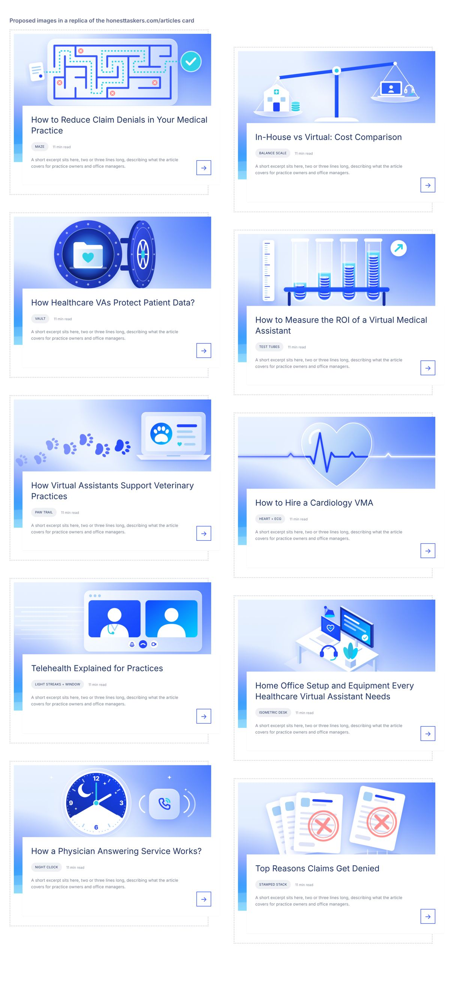
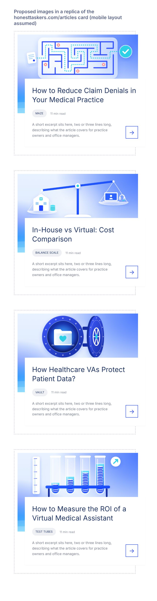
All 72
S01 · Glass pairVirtual Medical Assistant in EpicS02 · Capsule equaliserHealthcare Call Center Outsourcing: Services, Costs, and ProvidersS03 · Aurora blobs + one objectPhysician Burnout and Admin WorkloadS04 · Layered depth stackMedical Billing Virtual Assistant GuideS05 · Ghosted giant shapeHow to Hire a Virtual Dental Receptionist
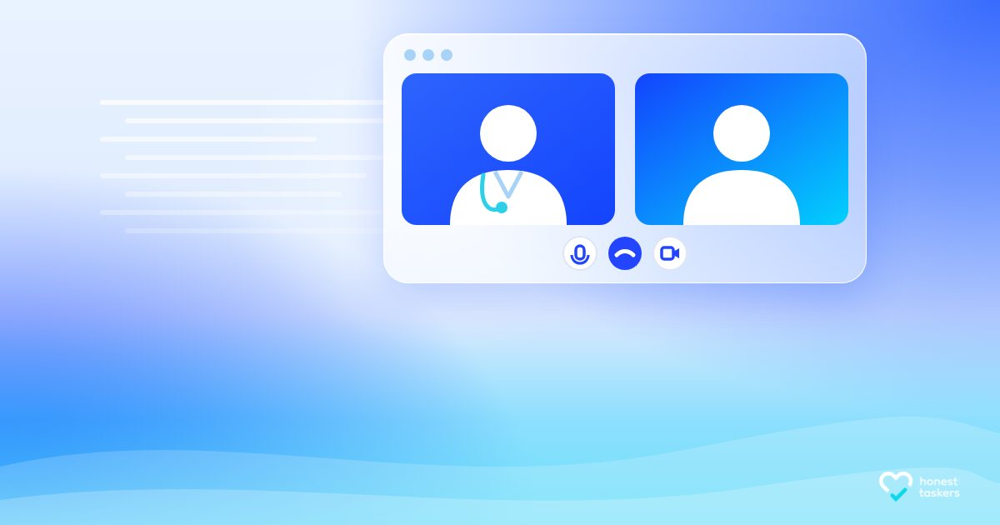
S06 · Light streaks + windowTelehealth Explained for PracticesS07 · Lens over patternMedical Coding AuditsS08 · Bubble stackBilingual Virtual Medical Receptionist: The Complete Guide
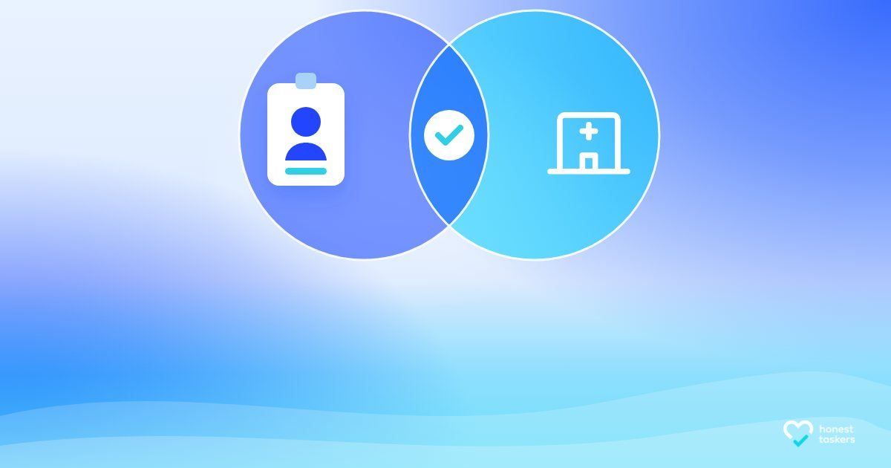
S09 · Translucent vennCredentialing vs Enrollment
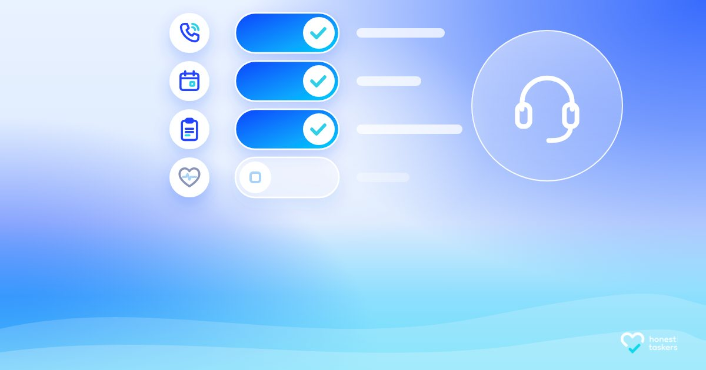
S10 · Toggle switchesSigns Your Practice Needs a Virtual Assistant (and When to Wait)
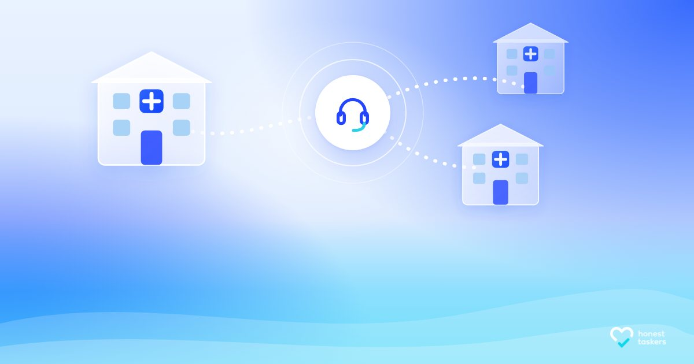
S11 · Connected buildingsHow to Hire a VA for Multi-Location Group PracticesS12 · Isometric deskHome Office Setup and Equipment Every Healthcare Virtual Assistant Needs
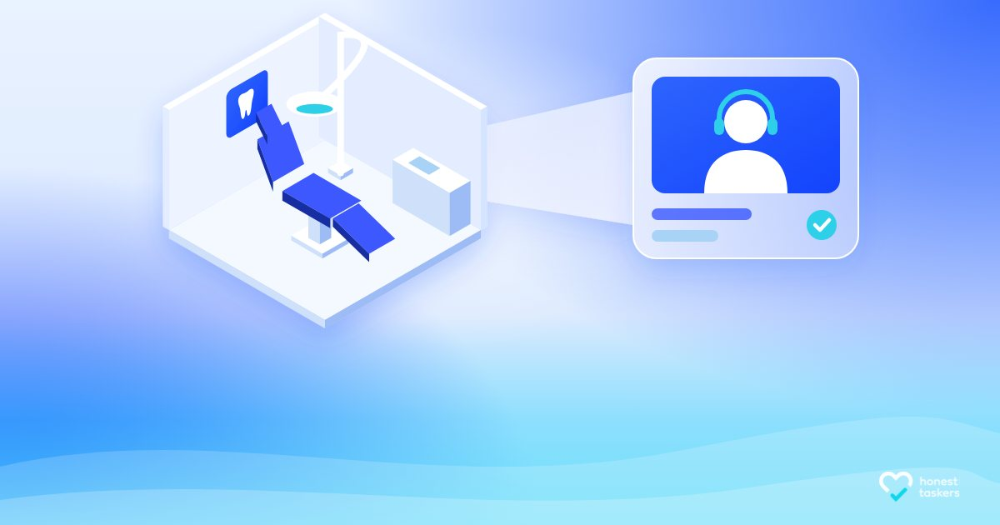
S13 · Isometric roomHow Do Dental Practices Use Virtual Assistants? A Full WalkthroughS14 · Hero + constellationWhat Tasks Can a Dental Virtual Assistant Take Over? 25 ExamplesS15 · Paper-cut layersHealthcare Staffing ShortagesS16 · Continuous lineHow Nurses Can Become Virtual Assistants
S19 · MazeHow to Reduce Claim Denials in Your Medical PracticeS20 · FunnelImproving Patient Intake
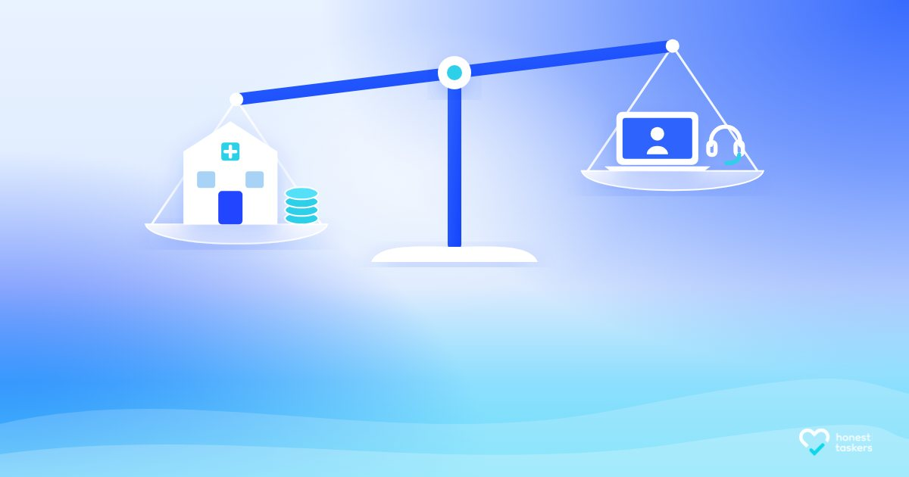
S21 · Balance scaleIn-House vs Virtual: Cost ComparisonS22 · Photo splitVirtual Medical Assistant vs In-Person Medical AssistantS23 · StairsThe Highest-Paying Healthcare Virtual Assistant Roles
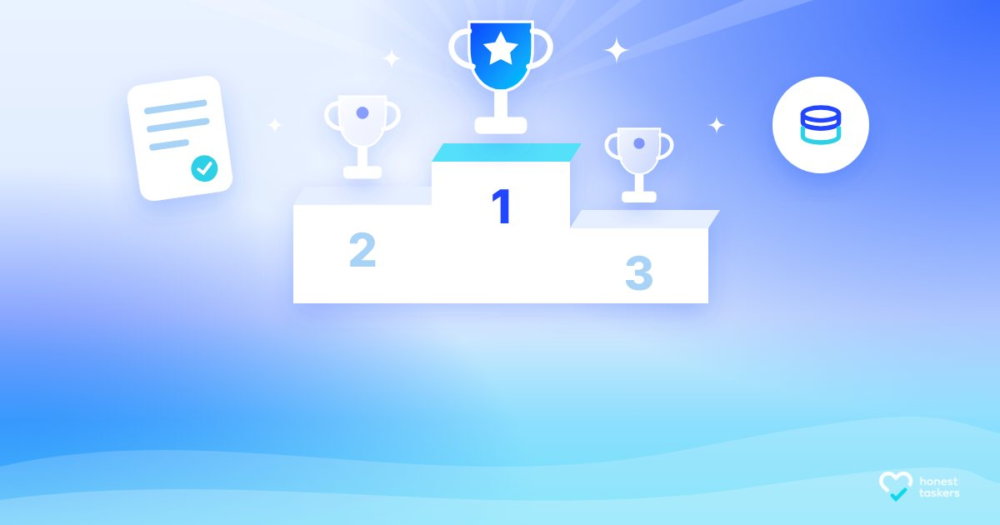
S24 · PodiumBest Medical Billing CompaniesS25 · Globe + shieldIs It Legal to Hire an Overseas Healthcare VA?S26 · Flight arcUS-Based vs. Offshore Virtual Medical Biller: Cost, Quality, and ComplianceS27 · Night clockHow a Physician Answering Service Works?
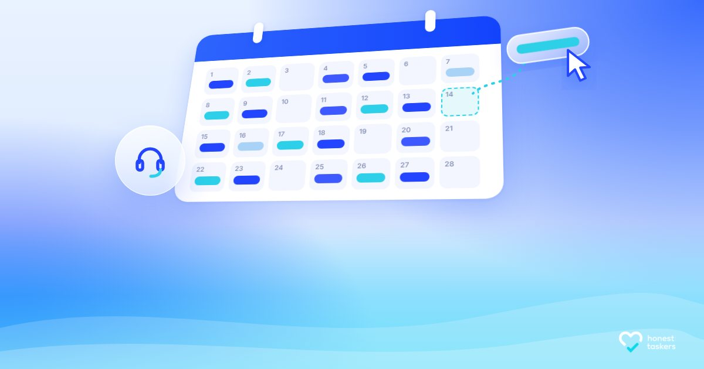
S28 · Giant calendarHow to Outsource Medical SchedulingS29 · KeycapsVirtual Medical Records Specialist Skills
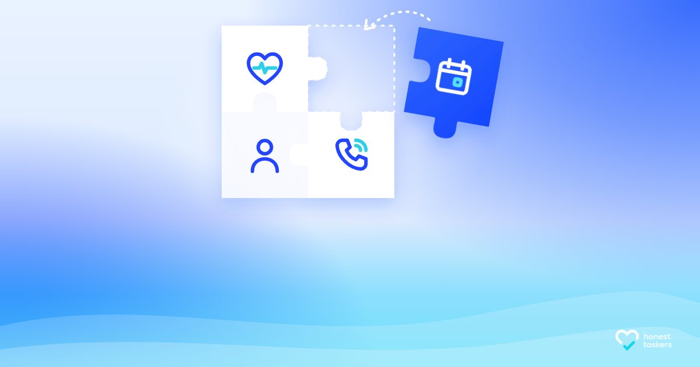
S30 · PuzzleHow to Hire a Virtual Care CoordinatorS31 · Folder fanVirtual Medical Records Specialist Guide
S35 · Snap-on blocksMedical Billing Modifiers ExplainedS36 · Pins on iso mapPlace of Service CodesS37 · Circle packingProvider Taxonomy CodesS38 · Four quadrantsWhat Are SOAP Notes?
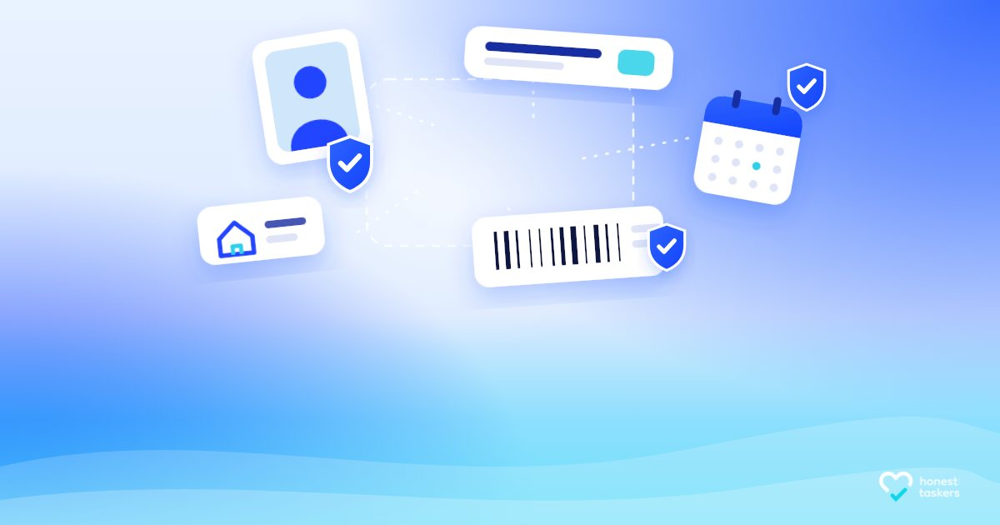
S39 · Exploded ID cardWhat Counts as PHI?S40 · VaultHow Healthcare VAs Protect Patient Data?S41 · Network vs singleEHR vs EMR
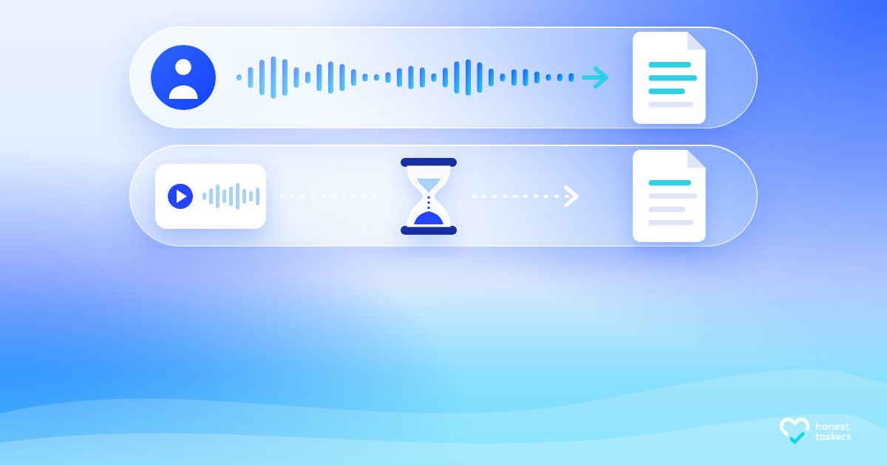
S42 · Wave to docScribing vs TranscriptionS43 · Half and halfVirtual Medical Scribe vs. AI Medical Scribe: Key Differences and Which to ChooseS44 · Chaos deskFront Desk Burnout in Medical Offices, Signs and Fixes
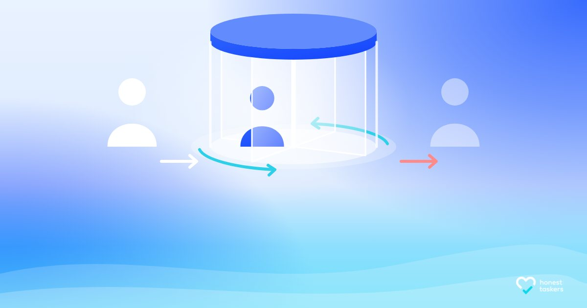
S45 · Revolving doorMedical Office Staff Turnover, What It Costs and How to Cut ItS46 · Test tubesHow to Measure the ROI of a Virtual Medical Assistant
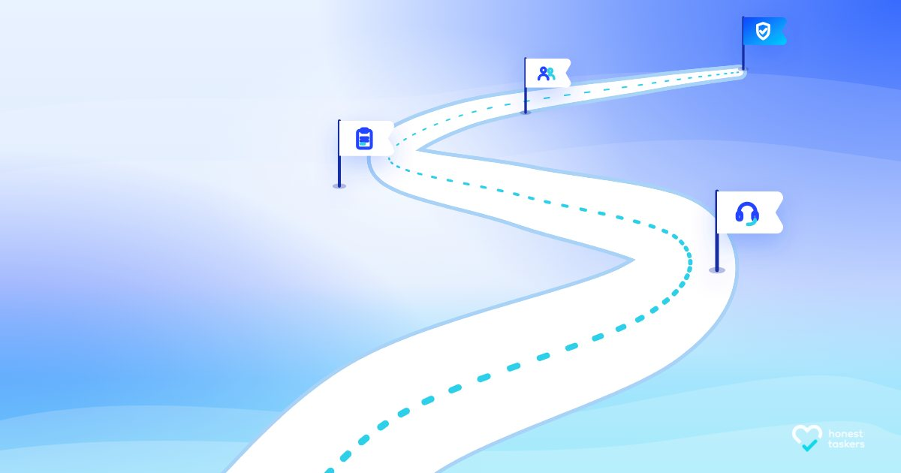
S47 · Winding roadHealthcare Virtual Assistant Career Path and Where the Role Can Lead
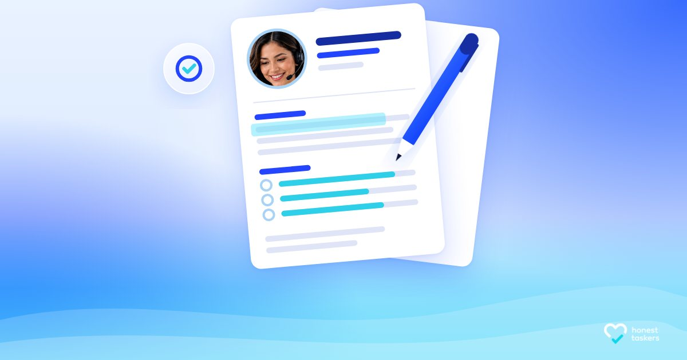
S48 · Resume sheetHealthcare Virtual Assistant Resume Guide (With Examples)S49 · PinboardWhere to Find Healthcare Virtual Assistant Jobs
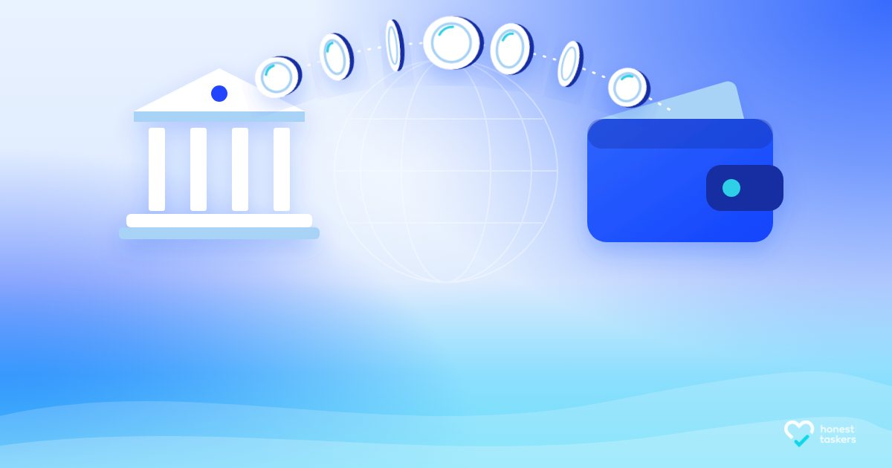
S50 · Coin arcHow Virtual Assistants Get Paid by US CompaniesS51 · Bars from a mapVirtual Assistant Pay in Latin America, Country-by-Country RangesS52 · IslandsVirtual Assistant Salary in the PhilippinesS53 · Photo in screenHow Virtual Assistants Keep Telehealth Practices Running
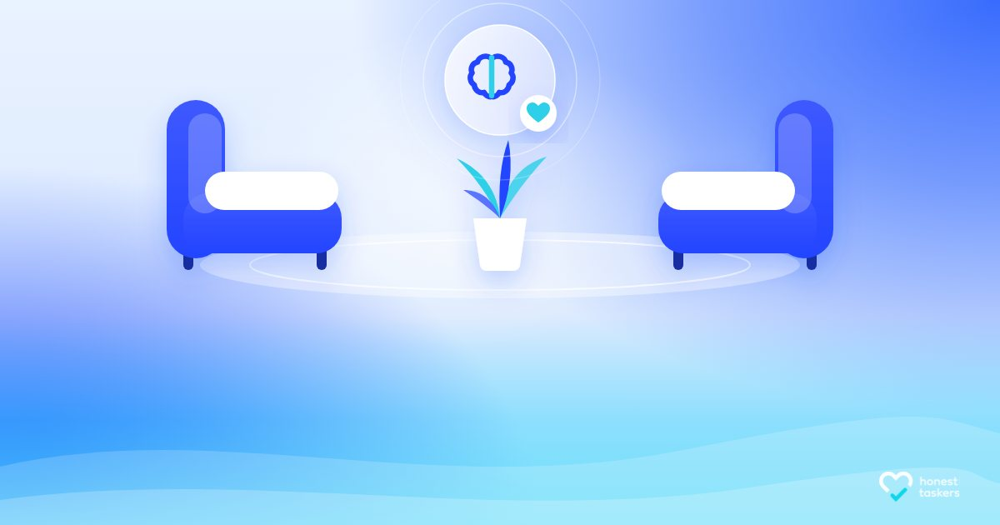
S54 · Calm roomHow Virtual Assistants Support Therapy and Mental Health PracticesS55 · Paw trailHow Virtual Assistants Support Veterinary Practices
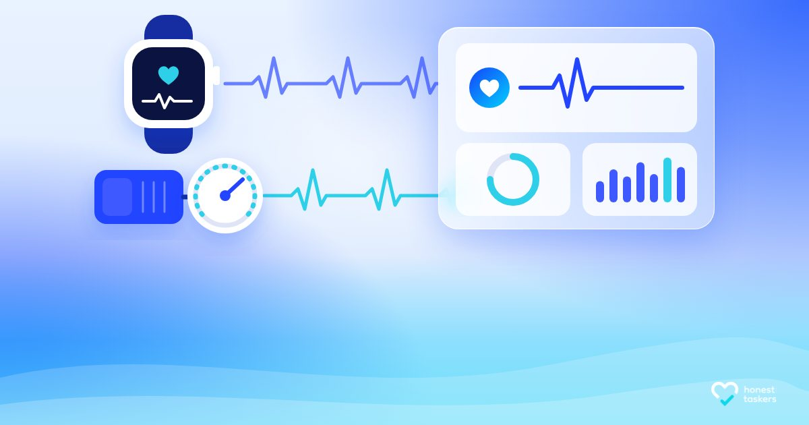
S56 · Devices to dashboardRemote Patient Monitoring Assistant Guide
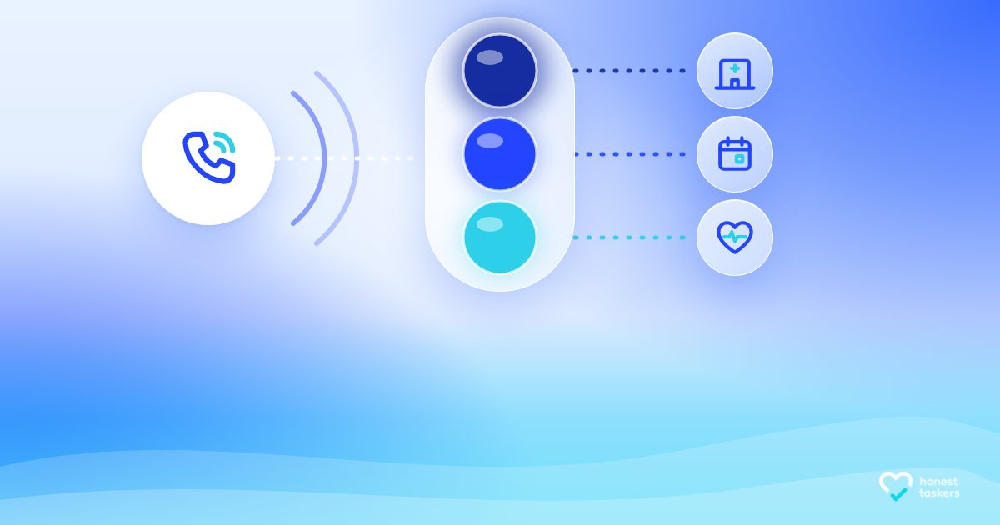
S57 · Signal stackTelephone Triage Virtual Assistant SkillsS58 · Month ringHow to Hire a Virtual Chronic Care Management AssistantS59 · Capsules macroHow to Hire a Pharmacy Virtual AssistantS60 · Lens ringsHow to Hire a Optometry VMAS61 · Heart + ECGHow to Hire a Cardiology VMAS62 · Toy blocksHow to Hire a Pediatrics VMAS63 · Night skyHow to Hire a Sleep Medicine VMAS64 · X-ray negativeHow to Hire a Orthopedics VMA
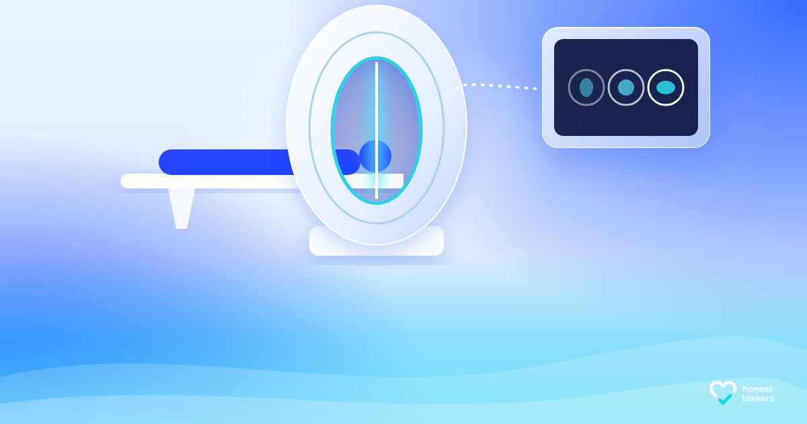
S65 · Scan ringsHow to Hire a Radiology VMAS66 · Serum dropsHow to Hire a VA for Med SpasS67 · Hands + heartHow to Hire a VA for Hospice And Palliative Care
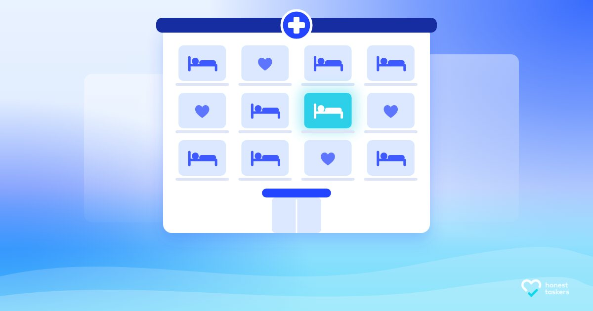
S68 · Building windowsHow to Hire a VA for Skilled Nursing FacilitiesS69 · Avatar gridTypes of Virtual Medical Assistants Explained for Practice OwnersS70 · Slab stackWhat Software Do Virtual Medical Assistants Use? The Full Stack
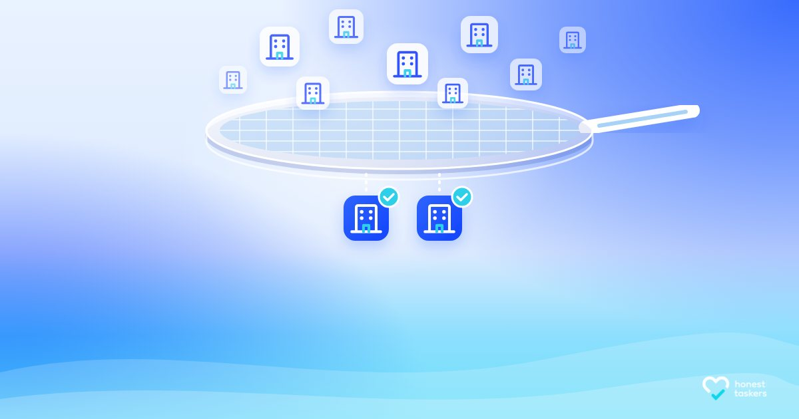
S71 · Sieve/filterHow to Vet Virtual Assistant Staffing Companies and the Questions to Ask
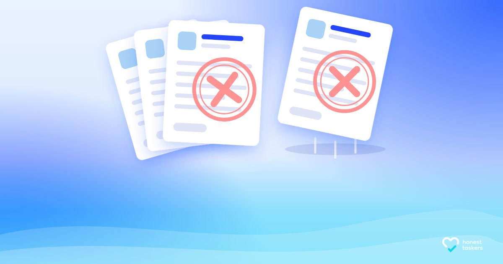
S72 · Stamped stackTop Reasons Claims Get Denied
Rules every cover follows
No words or letters. Digits appear only as part of an object, such as a clock face, a podium or a code chip.
No prices, no currency signs and no question marks. The coin icon is a plain coin stack.
No third-party logos. EHRs are shown as a generic monitor.
Brand blues, teal and cyan, with coral only for a problem signal (a denial, a ringing phone).